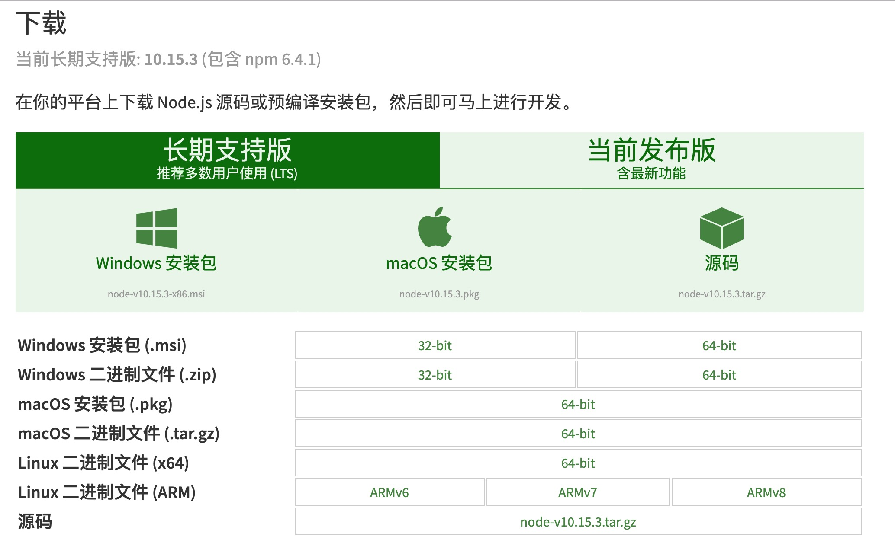
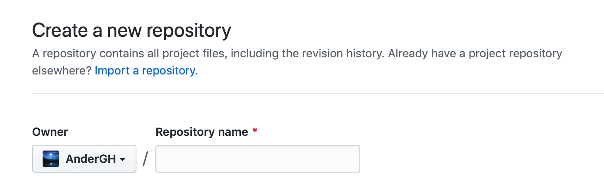
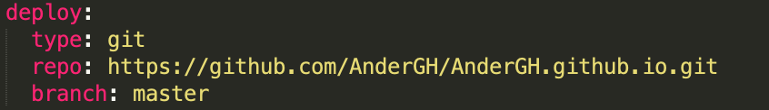

如何在macOS系统下搭建hexo博客
本文最后更新于：8 个月前
JavaScript作为一种脚本语言，出现没多久就事实上统一了前端开发，而Node.js的出现，把JavaScript也带入到了后端服务的开发，hexo博客框架就是基于node.js开发的工具。
一、安装node.js环境
node.js有中文官网，地址：https://nodejs.org/zh-cn/，macOS系统下直接下载安装包安装即可，官网建议使用LTS的稳定版本

二、node.js包管理工具npm
当越来越多的开发者使用node.js环境开发时，此时就需要一个统一管理这些开源包的工具，npm是世界上最大的软件注册表，基本上所有基于node.js的开源软件开发者都在使用npm互相分享，关于npm的介绍请参考官网，地址：https://www.npmjs.com.cn/。
而从刚才node.js官网中可以看到，我们安装的node.js安装包中已经包含了npm工具，可以直接开始使用。
三、node.js版本管理工具Node version managers
一般情况下，我们安装完node.js后就可以直接使用了，但是会经常碰到一个权限的报错，官网也对这个问题进行了收录，地址：https://docs.npmjs.com/resolving-eacces-permissions-errors-when-installing-packages-globally，官网给出了两个方法，推荐使用Node version managers重新安装npm
Node version managers简称nvm，就是用来管理node.js和npm的版本的，我们可以直接访问github上manOS版本的代码以及文档，地址：https://github.com/creationix/nvm，根据文档说明使用如下命令行进行nvm的安装
1 | |
注意：安装完之后，根据文档和终端弹出的提示，nvm启动需要如下的命令（不同的版本可能需要的命令有差别，请以终端弹出的提示为准）
1 | |
每次重启终端的，打开新的终端页面，都需要再次启动nvm命令，所以官方文档建议我们将命令配置到nvm的隐藏文件中，每次打开终端可以直接使用，我按照文档修改了~/.bash_profile文件，写入了以上的启动命令，保存后每次打开终端就可以直接使用nvm命令了。
安装完nvm后重新安装或更新npm，已经没有权限的报错了。
四、淘宝镜像cnpm
由于npm工具是国外的服务器，所以淘宝提供了一个国内的镜像版本，地址：https://npm.taobao.org/，该网站上有使用文档，命令行简单引用即可，其他用法请自行参考。
1 | |
五、hexo博客框架搭建
所有的环境安装结束后，开始生成hexo博客，hexo中文官网地址：https://hexo.io/zh-cn/
1. 导入hexo代码
1 | |
注意：官网要求导入的是hexo-cli，而不是hexo，这两者是有区别的，hexo-cli负责使用init等命令创建hexo工程，创建好了之后，工程由hexo模块负责真正的项目工作（生成静态页面、预览等）。
2. 创建本地hexo工程
首先创建博客本地工程文件夹，我的文件夹名称就叫MyBlog，打开终端，cd命令到MyBlog文件夹后，使用init命令创建工程，当然也可以按照官网的命令行，效果一致。
1 | |
等待init结束，hexo博客工程就已经创建好了
3. hexo的常用命令
1 | |
六、关联Github
创建github账号，新建仓库，仓库名称写法为固定写法用户名.github.io，例如我的博客名称AnderGH.github.io

将完整的仓库地址配置在博客配置文件_config.yml

七、其他问题
- 执行
hexo g后报错
ERROR Deployer not found: git
根据官方文档知道hexo框架升级到3.0版本之后需要安装git环境，如下命令
1 | |